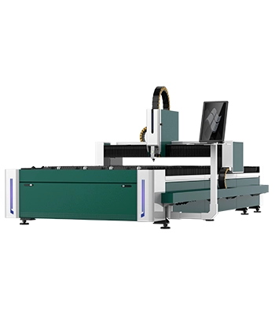
Senrytech A
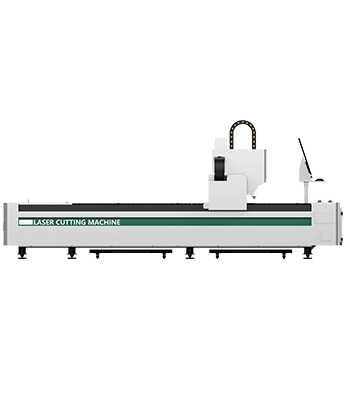
Senrytech B
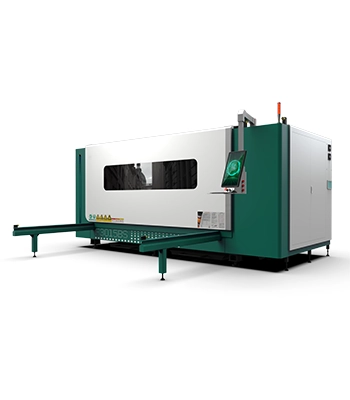
Senrytech B Plus
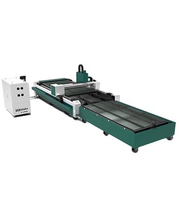
Senrytech B Pro
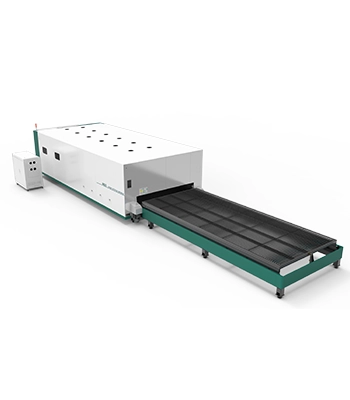
Senrytech B ProMax
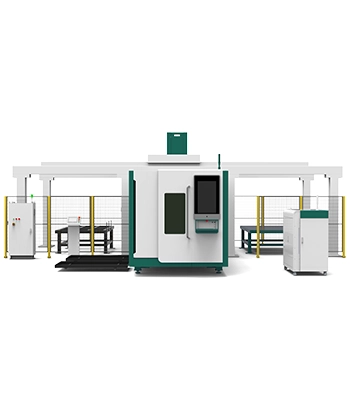
Senrytech B Ultra
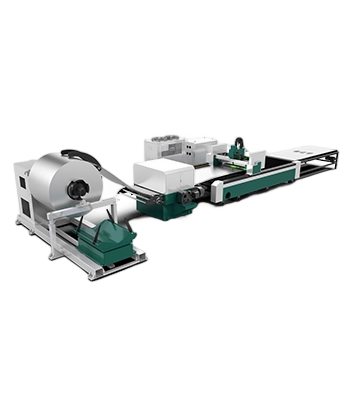
Senrytech C
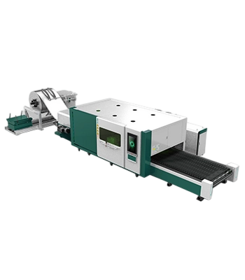
Senrytech C Pro
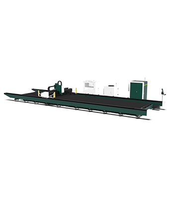
Senrytech G
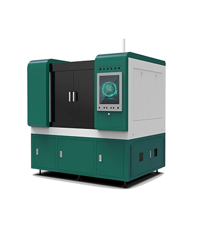
Senrytech M
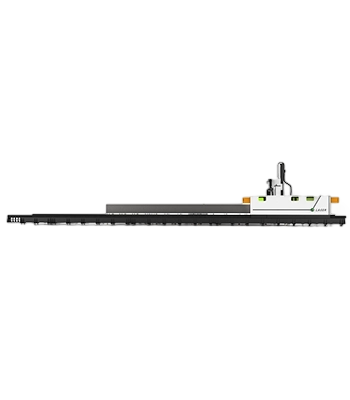
Senrytech S

灵活上门安装
提供专业安装人员，费用透明，按需定制安装流程，不用零散找技工。

按需上门维修
明码标价的上门维修，快速协调适配机型的技术人员，维修资源更匹配。

明确期质保
1 年质保覆盖 “非人为、非不当使用” 故障，减少意外成本。

24 小时售后咨询
24 小时在线响应操作、调试等疑问，不用等工作日解决。

实时咨询响应
咨询实时回，暂无法解决也同步跟进节奏，不用长时间等回复。